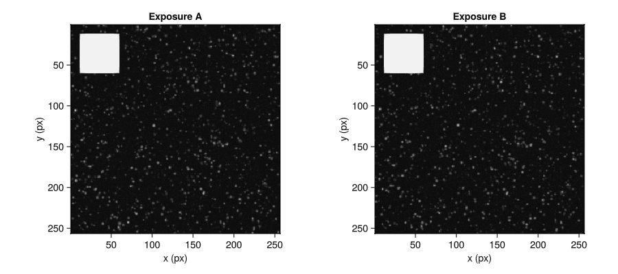

Your first PIV session in the GUI
Turn two particle images into a vector field, exclude a reflection, and save both the result and the settings needed to repeat it. This example uses a synthetic vortex, so you can follow along without downloading a recording.
Install HammerheadGUI with pkg> add HammerheadGUI, then load it:
using HammerheadGUI
using HammerheadThe batch form, mask editor, and result explorer are separate windows. The screenshots below show the real tools. The short code blocks make the same selections for this worked example; you can use their buttons instead.
1. Start with two exposures
Particles move around the center of this pair. The bright square stays put: it represents a reflection that would give misleading displacement measurements.
using Hammerhead.SyntheticData, Random
flow(x,y,z,t) = (-0.015*(y-128), 0.015*(x-128), 0.0)
imgA, imgB, _, _ = generate_synthetic_piv_pair(flow, (256,256), 1.0;
particle_density=0.05, background_noise=0.03, rng=MersenneTwister(42))
peak = max(maximum(imgA), maximum(imgB)) # same PNG intensity scale for both
imgA ./= peak
imgB ./= peak
imgA[12:60,12:60] .= 1.0
imgB[12:60,12:60] .= 1.0
Save the example images so the file-based workflow can use them:
work = mkpath("gui-example") # use your own output folder if you prefer
paths = [joinpath(work, "frame-A.png"), joinpath(work, "frame-B.png")]
for (path, image) in zip(paths, (imgA, imgB))
Hammerhead.FileIO.save(path, Hammerhead.Gray.(image))
end
batch = BatchRunner(files=paths)With your own images, open batch_runner() and use add frames… to select them in A/B order. For a longer recording, choose paired exposures (1–2, 3–4) or consecutive frames (1–2, 2–3).
2. Exclude the reflection
Open mask_editor(paths[1]). Left-click just outside the square's four corners, then right-click to close the polygon. Turn on show mask: red means excluded. These calls draw the same boundary:
mask = MaskEditor(paths[1])
for (x, y) in ((9,9), (63,9), (63,63), (9,63))
add_vertex!(mask, x, y)
end
close_active!(mask)
mask.show_mask[] = true
Click save mask…, then load mask… in the batch window. Here we make that hand-off through the same mask image format:
mask_path = joinpath(work, "reflection-mask.png")
save_mask(mask, mask_path)
batch.mask[] = load_mask(mask_path)A mask excludes image regions. It does not decide whether the remaining vectors are accurate; we will inspect those after processing.
3. Choose the settings and units
Choose medium effort for this first run. The preset selects a multi-pass window schedule for you. Choose an output file so the result survives closing the window.
For this example, declare a pixel size of 0.02 mm and an exposure delay of 0.001 s. On your recording, use your measured scale and the delay between the paired exposures. Typing a unit label does not convert the numeric factor.
set_effort!(batch, :medium)
set_scale!(batch; pixel_size=0.02, dt=0.001, length_unit="mm", time_unit="s")
batch.output_path[] = joinpath(work, "vectors.jld2")
Need a smaller region? edit ROI… opens a rectangle editor. Need to condition the images? preprocess… opens a raw/processed comparison. Both have an explicit apply/use in batch action. Leave them unchanged for this first run.
4. Run, then inspect the vectors
Press run. The progress count reaches 1 / 1; view results opens another window. For this tutorial, wait for the same run through code:
start!(batch; async=false)
batch.status[]"done: 1 pairs → vectors.jld2"The arrows should circulate around the center, with the reflection region omitted. The axes and colorbar now use the scale entered above. Click a vector to read its components and status; red flagged vectors deserve a closer look.
explorer = ResultExplorer(batch.results[])
select_nearest!(explorer, 3.5, 2.5)
Try u or v in the field menu. To look for rotation, choose vorticity; check masks and flagged vectors before interpreting small features, because derivatives amplify local errors. For a longer recording, the frame slider moves through the results.
Use cancel during a batch to stop after the current pair. Finished pairs remain available in the output file.
5. Keep the result and the settings
The result is already in vectors.jld2. Reopen it with:
reopened = ResultExplorer(batch.output_path[]; lazy=true)
nframes(reopened)1The same file also records the settings that produced it: passes, mask, ROI, scale and preprocessing. Click save settings… to write them to a separate recipe file, which you can open in a later session with open settings…. The equivalent code is:
settings_path = joinpath(work, "vortex-settings.jld2")
save_settings(batch, settings_path)
recipe = load_recipe(batch.output_path[])
recipe == load_recipe(settings_path)trueOpening either file in a new batch form loads its exact passes as the saved settings effort, together with its mask and scale. Add the frames of the next recording and press run:
next_batch = BatchRunner()
load_settings!(next_batch, settings_path)
next_batch.status[]"loaded settings: 2 passes"You have now made a masked vector field, inspected it in physical units, saved its native result, and saved the settings for repeating the analysis. Save settings and reuse them shows how to apply the same recipe from a script.
For your next task, use the GUI task guide. It points to preprocessing, profiles, stereo, and tracking without requiring you to learn every tool at once.
This page was generated using Literate.jl.